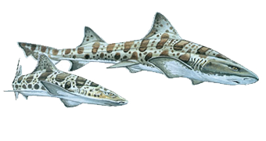

| Leopard Sharks | ||
|---|---|---|
|  |
Scientific Name: |
Triakis semifasciata |
|
Visual Details: |
Maximum length of 7 feet, silver to bronzy gray with dark saddles and spots, lighter underside | |
| Habitat: | Marine, sandy and muddy bays in shallow water less than 20 feet (6 meters) in depth. They are located in the Eastern Pacific Ocean from Oregon to the Gulf of California | |